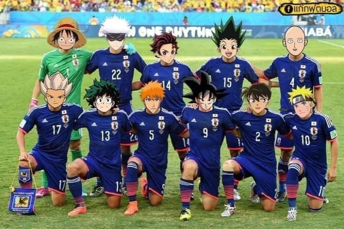

전설의 1군이 출전했다면...

전설의 1군이 출전했다면...
가츠는 저기 못 끼겠네......
가츠는 페럴림픽 나가야해
아!!
내 손이 이래가...
손오공은 왤케 잘 어울리냐
우리도 이번엔 심판 성접대 안 했으니 샘샘이라고 치자
2번은 저상태로 출전하면 도핑때문에 문제되지 않나? 아니면 작게 출전했을때 도핑에 걸리려나
그냥 나루토 혼자서 그림자 분신술 써도 ㅋㅋㅋㅋㅋㅋㅋㅋㅋ
9번이 작심하고 기합한번 터뜨리면 행성이 박살나지않냐
축구 캐릭은 하나밖에 없잖아
일군은 일본군의 준말임
유지로가 없자뉴
골키퍼 루피는 존나 노양심이네 진짜 ㅋㅋㅋㅋ
저걸 어케 뚫어
손오공이랑 슈퍼맨 싸우면 누가 이김?
옛날 슈퍼맨이라고 실버에이지 슈퍼맨 검색하면 나오는 짤들 보면 재채기 한 번에 항성계 하나 박살내고 완력으로 은하계 별들 연결해서 끌고 다니고 빛 보다 빠르게 날아서 아무렇지도 않게 시간여행하고 다니더라
슈퍼맨은 버젼이 너무 많아서 강함이 천차만별임.
손오공도 시리즈별로 다르긴한데 정사로 취급되는 시리즈내에서 꾸준히 강해지는 식이고.
그래서 가장 강한 버젼끼리 싸우면 슈퍼맨이 압도적으로 강함. 전투성립조차 안됨.
반면 최근까지 정립된 이슈에서
"일반적으로 슈퍼맨의 강함과 능력은 이정도된다" 라는 선에서 비교하면 손오공이 더 우세함.
왜 이렇게 복잡하냐면
미국만화 히어로들은 엄청 오래전부터 연재되기도 했고 한 작가가 만드는게 아니고 여러 작가들이 여러 작품을 만들기 때문에
슈퍼맨의 버젼이 엄청 많음.
세대 별로는 물론이고 단편적인 에피소드나 이슈별로도 묘사가 다 달라짐.
그래도 중심이 되는 메인 시리즈는 존재하는데 이것도 시즌제 게임마냥 한번씩 리부트해서 갈아엎어서 달라짐.
왼쪽아래 두명은 누구야?
하나는 그림체 보면 나히아 같은데 회색머리는 나도 모르겠네
이나즈마 일레븐 고엔지 슈야하고
나히아 주인공
썬더 일레븐 염성화 파이어 토네이도 쓰는 애
초록색은 나의 히어로 아카데미아 데쿠
와 근데 경기 보는데 일본도 진짜 어지간하드라 슛을 열 번 넘게 쳐때리는데 어떻게 한 골을 못 넣냐? 걍 경기 던진 줄
축구가 아니라 살인사건이 난다
사이타마랑 손오공이 원투패스하고 슛때리면 경기장 날아가는거 아니냐
축구 잘하게 생겼네
남도일이 그나마 현실적이네
1명은... 주인공이 아닌데?? ㅋㅋㅋㅋ
거의 유소년축구팀이잖아
축구 만화 출연하는 애들은 하나도 없네
밑줄 왼쪽 끝에 있어
은하대표 전설의 1군